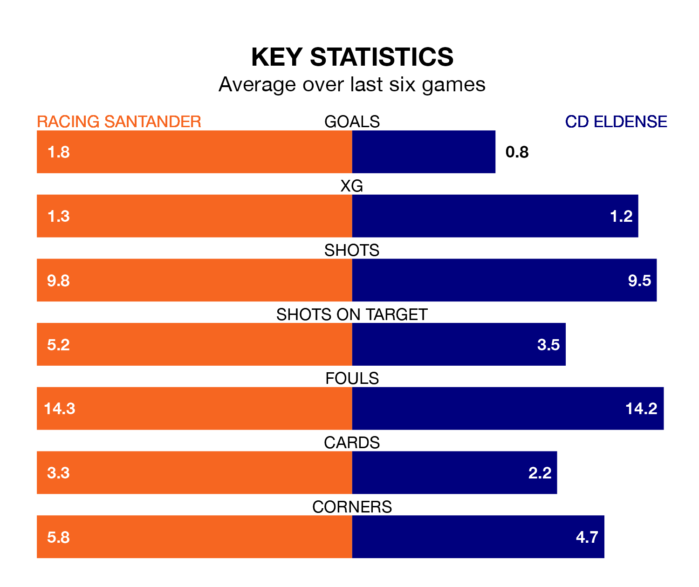

CD Eldense travel to Racing Santander on late Sunday in the Segunda División.
The visitors come into the game on the back of a draw in their last match, having tied with FC Cartagena 0-0 at home.
Racing also drew their last match, 1-1 against Real Oviedo, with their goal scored by Gerard Fernández Castellano.
With 49 goals in 31 games so far this season, Racing are the league's highest scorers with 1.6 goals per game. But they are conceding more than average too, letting in 44 goals at a rate of 1.4 per game.
Eldense are also above average scorers, with 1.3 goals per game, compared to a league average of 1.1. They have also conceded 1.3 goals per game.
In Fernández Castellano, the hosts have one of the league's sharpest shooters so far this season. He has notched 15 goals in 30 appearances, to sit second in the scoring charts.
The away team's top scorers, with eight goals each, are Mario Soberón Gutiérrez and Iván Chapela López.
Racing are ninth in the table after 31 games, of which they have won 13 and drawn eight, earning 47 points.
Eldense are three places behind Racing in 12th, with 10 wins and 12 draws putting them on 42 points.
The home side are in reasonable form in the Segunda División, with three wins and two draws from their last six games.
With two wins and two draws over that period, Eldense's form is worse – they have taken eight points from 18, compared to Racing's 11.
Sunday's match will be refereed by Luis Mario Milla Alvéndiz, who has taken charge of 16 Segunda División games so far this season, issuing three red cards and booking 89 players. He has awarded five penalties.
The last Racing game Milla Alvéndiz refereed was a 2-0 home win against Villarreal B on November 25. He is yet to oversee a match featuring Eldense this season.
Updated: 10:19 (UTC), 22/03/24